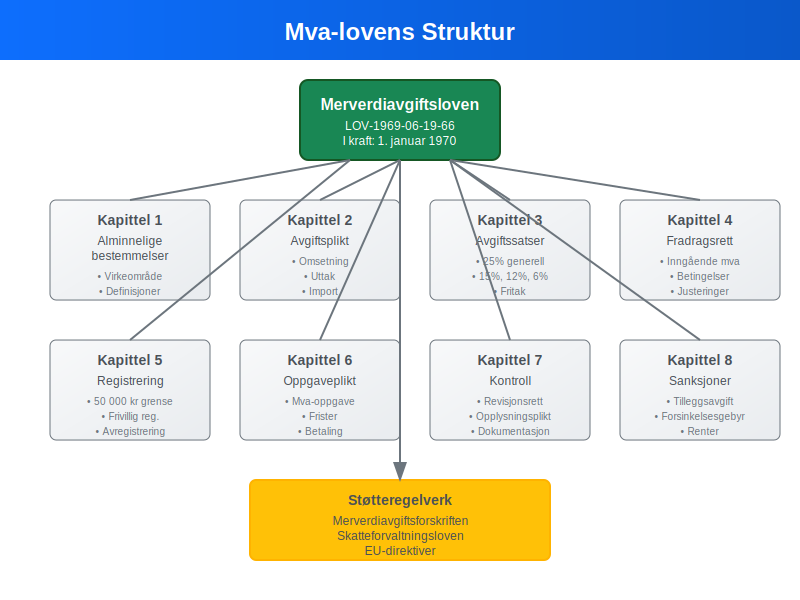
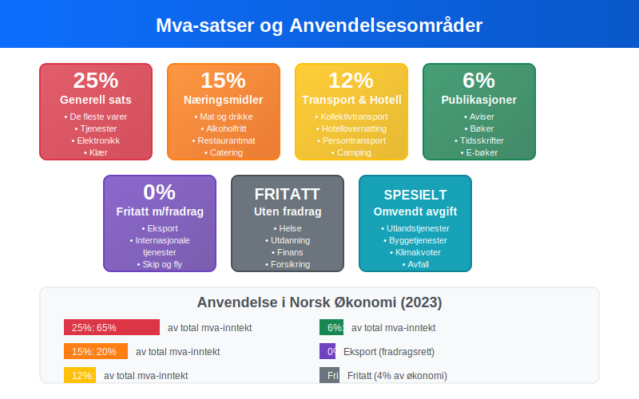
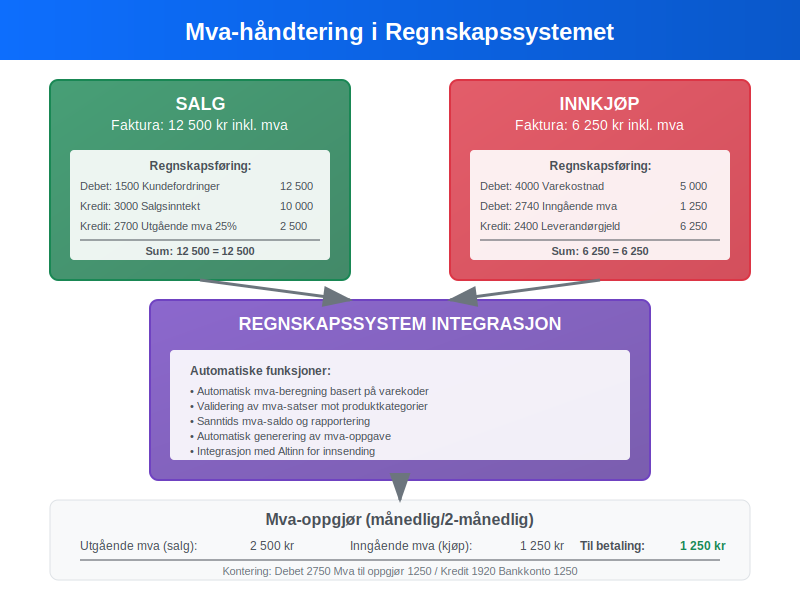
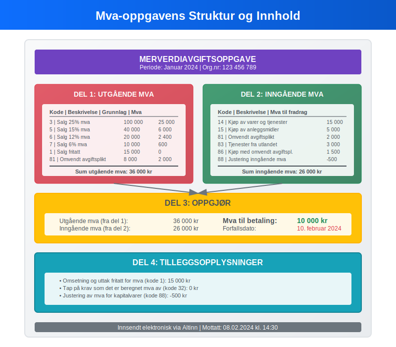
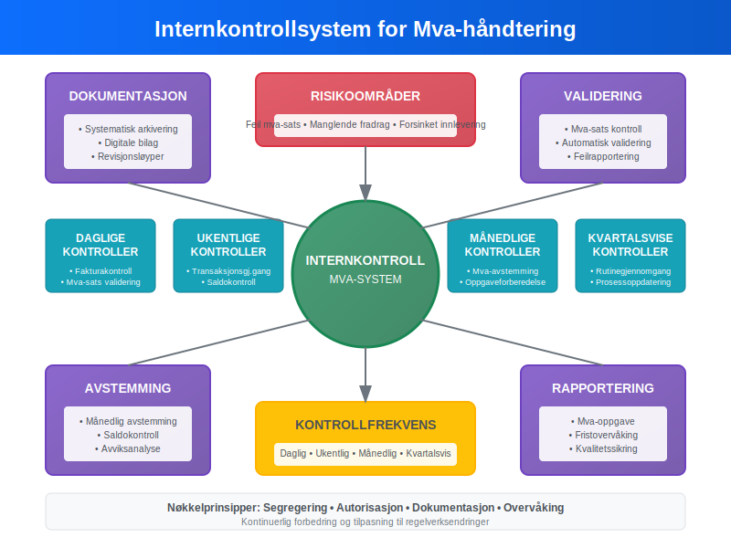
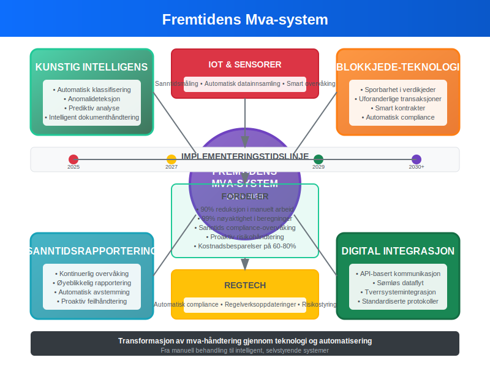

Mva-loven (merverdiavgiftsloven) er det sentrale regelverket som regulerer merverdiavgift i Norge. Loven fastsetter reglene for når bedrifter må registrere seg i Merverdiavgiftsregisteret, hvilke satser som gjelder, og hvordan merverdiavgift skal håndteres i regnskapet. For norske bedrifter er forståelse av mva-loven essensielt for korrekt regnskapsføring og unngåelse av sanksjoner.
For en grundig innføring i Merverdiavgift, se vår omfattende guide.
Mva-loven påvirker alle aspekter av bedriftens økonomi, fra fakturering til årsregnskap, og krever systematisk håndtering i bedriftens internkontroll.
Seksjon 1: Grunnleggende om Mva-loven
Merverdiavgiftsloven trådte i kraft 1. januar 1970 og har siden gjennomgått flere revisjoner for å tilpasse seg EU-direktiver og moderne forretningspraksis.

Lovens Formål og Virkeområde
Mva-loven har som hovedformål å sikre statens inntekter gjennom en generell forbruksavgift som pålegges omsetning av varer og tjenester. Loven gjelder for:
- Omsetning av varer og tjenester i Norge
- Uttak av varer og tjenester fra virksomheten
- Innførsel av varer til Norge
- Kjøp av varer og tjenester fra utlandet (omvendt avgiftsplikt)
Registreringsplikt
Bedrifter må registrere seg i Merverdiavgiftsregisteret når omsetningen overstiger 50 000 kroner i løpet av 12 måneder. Dette gjelder både:
- Frivillig registrering: Bedrifter under grensen kan velge å registrere seg
- Obligatorisk registrering: Bedrifter over grensen må registrere seg innen en måned
Registreringen påvirker direkte hvordan leverandørgjeld og kundefordringer skal behandles i regnskapet.
Seksjon 2: Mva-satser og Beregning
Norge opererer med et differensiert mva-system med ulike satser avhengig av vare- eller tjenestetype.

Gjeldende Mva-satser
| Mva-sats | Anvendelsesområde | Eksempler |
|---|---|---|
| 25% | Generell sats | De fleste varer og tjenester |
| 15% | Næringsmidler | Mat, alkoholfrie drikkevarer |
| 12% | Transport og overnatting | Kollektivtransport, hotell |
| 6% | Trykte publikasjoner | Aviser, bøker, tidsskrifter |
| 0% | Fritatt med fradragsrett | Eksport, internasjonale tjenester |
| Fritatt | Fritatt uten fradragsrett | Helse, utdanning, finans |
Beregning av Utgående Mva
Utgående mva beregnes på grunnlag av vederlag eksklusiv mva:
Utgående mva = Vederlag × (Mva-sats / 100)
Totalt vederlag = Vederlag + Utgående mva
Eksempel på beregning:
- Salg av tjeneste: 10 000 kr ekskl. mva
- Mva-sats: 25%
- Utgående mva: 10 000 × 0,25 = 2 500 kr
- Totalt fakturabeløp: 12 500 kr
Inngående Mva og Fradragsrett
Bedrifter med fradragsrett kan trekke fra mva på innkjøp som brukes i avgiftspliktig virksomhet:
- Full fradragsrett: For innkjøp utelukkende til avgiftspliktig virksomhet
- Delvis fradragsrett: Ved blandet anvendelse (avgiftspliktig og fritatt virksomhet)
- Ingen fradragsrett: For innkjøp til fritatt virksomhet eller private formål
Seksjon 3: Regnskapsmessig Behandling
Mva-håndtering krever systematisk bilagsføring og korrekt kontering i henhold til kontoplanen.

Kontostruktur for Mva
Standard kontoplan for mva-håndtering:
| Kontonummer | Kontobeskrivelse | Type |
|---|---|---|
| 2700 | Utgående merverdiavgift høy sats (25%) | Gjeldskonto |
| 2701 | Utgående merverdiavgift middels sats (15%) | Gjeldskonto |
| 2702 | Utgående merverdiavgift lav sats (12%) | Gjeldskonto |
| 2703 | Utgående merverdiavgift særskilt sats (6%) | Gjeldskonto |
| 2740 | Inngående merverdiavgift | Fordringskonto |
| 2750 | Merverdiavgift til oppgjør | Gjeldskonto |
Bokføring av Salg med Mva
Ved salg på 12 500 kr inkl. 25% mva:
Debet: Kundefordringer 12 500 kr
Kredit: Salgsinntekt 10 000 kr
Kredit: Utgående mva 25% 2 500 kr
Bokføring av Innkjøp med Mva
Ved innkjøp på 6 250 kr inkl. 25% mva:
Debet: Varekostnad 5 000 kr
Debet: Inngående mva 1 250 kr
Kredit: Leverandørgjeld 6 250 kr
Seksjon 4: Mva-oppgave og Rapportering
Mva-registrerte bedrifter må levere mva-oppgave til Skatteetaten med jevne mellomrom, avhengig av omsetningens størrelse.
Rapporteringsperioder
| Omsetning (årlig) | Rapporteringsperiode | Frist |
|---|---|---|
| Under 1 million kr | Årlig | 31. januar |
| 1-5 millioner kr | Hver 2. måned | 10. i måneden etter |
| Over 5 millioner kr | Månedlig | 10. i måneden etter |
Innhold i Mva-oppgaven
Mva-oppgaven skal inneholde:
- Utgående mva fordelt på satser og koder
- Inngående mva som kan fradras
- Netto mva til betaling eller tilgode
- Grunnlag for beregningene
- Spesielle poster som omvendt avgiftsplikt

Automatisering av Mva-rapportering
Moderne ERP-systemer kan automatisere mva-rapportering:
- Automatisk kategorisering av transaksjoner etter mva-koder
- Sanntidsoppfølging av mva-saldo
- Direkte innsending til Altinn via API-integrasjon
- Avstemming mot hovedbok
Seksjon 5: Spesielle Mva-regler
Mva-loven inneholder flere spesialbestemmelser som påvirker regnskapsbehandlingen.
Omvendt Avgiftsplikt
Ved kjøp av tjenester fra utlandet plikter norske bedrifter å beregne og betale mva selv:
Debet: Tjenestekostnad 10 000 kr
Debet: Inngående mva 2 500 kr
Kredit: Utgående mva 2 500 kr
Kredit: Leverandørgjeld 10 000 kr
Justering av Inngående Mva
Ved endret anvendelse av anleggsmidler kan det oppstå justeringsplikt:
- 5-årsregelen: For fast eiendom og skip
- Forholdsmessig justering: Ved endret fradragsrett (se Forholdsmessig MVA)
- Tilbakeføring: Ved salg eller uttak til private formål
Mva ved Uttak
Uttak av varer eller tjenester til private formål utløser mva-plikt:
- Vareutttak: Til markedsverdi
- Tjenesteuttak: Til kostpris eller markedsverdi
- Representasjon: Over fastsatte grenser
Seksjon 6: Internkontroll og Compliance
Effektiv mva-håndtering krever robust internkontroll og systematiske kontrollrutiner.

Kontrollrutiner for Mva
Månedlige kontroller:
- Avstemming av mva-kontoer mot saldobalanse
- Kontroll av mva-satser på fakturaer
- Gjennomgang av omvendt avgiftsplikt-transaksjoner
- Kontroll av bilag og dokumentasjon
Kvartalsvise kontroller:
- Analyse av mva-saldo og avvik
- Kontroll av fradragsrett og justeringer
- Gjennomgang av spesielle mva-transaksjoner
- Oppdatering av mva-rutiner og prosedyrer
Dokumentasjonskrav
Mva-loven stiller strenge krav til dokumentasjon:
- Fakturaer: Må inneholde alle påkrevde opplysninger
- Regnskapsbilag: Systematisk arkivering i 10 år
- Mva-oppgaver: Oppbevaring med underliggende dokumentasjon
- Korrespondanse: Med Skatteetaten og rådgivere
Seksjon 7: Sanksjoner og Konsekvenser
Brudd på mva-loven kan medføre betydelige økonomiske konsekvenser for bedrifter.
Typer Sanksjoner
| Overtredelse | Sanksjon | Beløp/Prosent |
|---|---|---|
| Forsinket innlevering | Forsinkelsesgebyr | 1% per påbegynt måned |
| Uriktig oppgave | Tilleggsavgift | 20% av beløpet |
| Grov uaktsomhet | Tilleggsavgift | 40% av beløpet |
| Forsett | Tilleggsavgift | 60% av beløpet |
Regnskapsmessig Behandling av Sanksjoner
Mva-sanksjoner skal behandles som kostnader i regnskapet:
Debet: Forsinkelsesgebyr mva 500 kr
Kredit: Leverandørgjeld 500 kr
Sanksjoner er ikke fradragsberettiget i skatteregnskapet og må reverseres ved skatteavstemmingen.
Seksjon 8: Digitalisering og Fremtidige Endringer
Mva-området gjennomgår kontinuerlig digitalisering og modernisering.
E-faktura og Automatisering
Innføring av e-faktura påvirker mva-håndtering:
- Strukturerte data: Automatisk utlesing av mva-informasjon
- Sanntidsvalidering: Kontroll av mva-satser og beregninger
- Integrert bokføring: Direkte overføring til regnskapssystem
- Redusert feilrisiko: Mindre manuell behandling
Kommende Regelverksendringer
Flere endringer er planlagt i mva-regelverket:
- EU-harmonisering: Tilpasning til nye EU-direktiver
- Digitale tjenester: Nye regler for grenseoverskridende handel
- Miljøavgifter: Integrering med klimarelaterte avgifter
- Sanntidsrapportering: Mulig innføring av kontinuerlig rapportering

Kunstig Intelligens i Mva-håndtering
AI-teknologi kan forbedre mva-compliance:
- Automatisk klassifisering av transaksjoner
- Anomalideteksjon for å identifisere feil
- Prediktiv analyse for mva-planlegging
- Intelligent dokumenthåndtering for bilagsbehandling
Seksjon 9: Praktiske Råd og Best Practice
Effektiv mva-håndtering krever systematisk tilnærming og gode rutiner.
Implementering av Mva-rutiner
Oppstartsfase:
- Kartlegging: Identifiser alle mva-relevante transaksjoner
- Systemoppsett: Konfigurer regnskapssystem for mva-håndtering
- Opplæring: Sikre at personalet forstår mva-reglene
- Dokumentasjon: Etabler klare prosedyrer og rutiner
Løpende drift:
- Daglig: Kontroll av mva-satser på fakturaer
- Ukentlig: Gjennomgang av mva-transaksjoner
- Månedlig: Avstemming og forberedelse av mva-oppgave
- Årlig: Gjennomgang av rutiner og oppdatering
Vanlige Feil og Hvordan Unngå Dem
| Feiltype | Konsekvens | Forebyggende tiltak |
|---|---|---|
| Feil mva-sats | Tilleggsavgift | Automatisk validering |
| Manglende fradrag | Tapt refusjon | Systematisk gjennomgang |
| Feil tidspunkt | Rentekostnader | Kalenderoppfølging |
| Manglende dokumentasjon | Avvist fradrag | Digital arkivering |
Samarbeid med Rådgivere
Komplekse mva-spørsmål bør håndteres i samarbeid med kvalifiserte rådgivere:
- Autoriserte regnskapsførere: For løpende mva-håndtering
- Revisorer: For kontroll og kvalitetssikring
- Skatterådgivere: For komplekse mva-spørsmål
- Advokater: Ved tvister med Skatteetaten
Mva-loven representerer et komplekst, men essensielt regelverk for norske bedrifter. Korrekt håndtering av merverdiavgift krever samme grad av systematikk og nøyaktighet som annen regnskapsføring, men er avgjørende for å unngå sanksjoner og sikre optimal kontantstrøm.
Moderne digitale verktøy og systematiske rutiner kan betydelig forenkle mva-compliance, mens kontinuerlig oppdatering på regelverksendringer sikrer at bedriften alltid opererer i henhold til gjeldende bestemmelser. For bedrifter som investerer i robust mva-håndtering, blir dette en konkurransefordel gjennom redusert administrativ byrde og økt fokus på kjernevirksomheten.